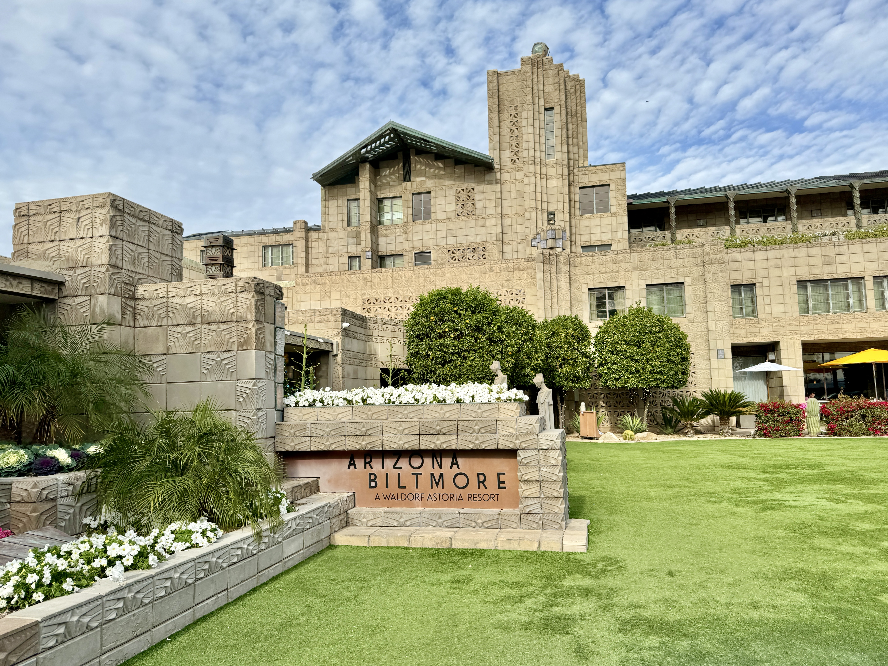
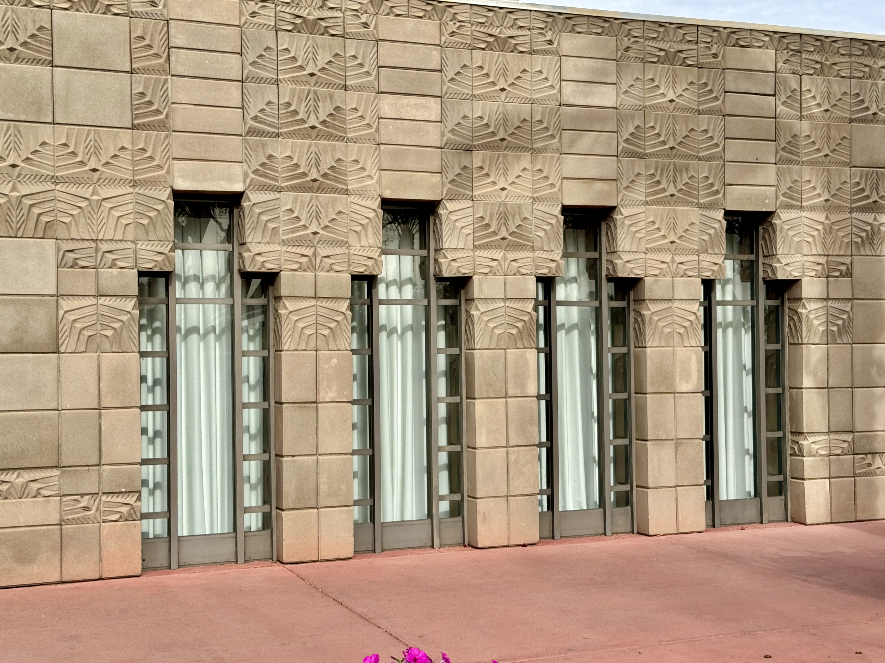

Arizona Biltmore
The Arizona Biltmore is a historic luxury resort in Phoenix that opened in 1929. It is known for its dramatic desert setting, geometric ornament, and long history of hosting famous guests.
Architect Albert Chase McArthur designed the hotel using a patterned concrete block sometimes called the “Biltmore block,” and the project reflects the influence of Frank Lloyd Wright’s work and teaching.

How to Get There
The Arizona Biltmore is located in central Phoenix, near the Phoenix Mountain Preserve.
- Address: 2400 E Missouri Ave, Phoenix, AZ 85016
- From Phoenix Sky Harbor Airport: About 15–20 minutes by car via AZ-51 or local streets.
- Nearby streets: The resort is close to 24th Street and Missouri Avenue.
Most visitors arrive by car, rideshare, or taxi. A maps app can provide turn-by-turn directions from your starting point.
Architecture and Biltmore Blocks
The Biltmore’s walls are made with repeating decorative concrete blocks that create rhythm and texture across the building’s facades. At sunrise and sunset, light and shadow emphasize the block patterns and highlight the Art Deco influences in the design.
The resort’s gardens, pools, and terraces extend the architecture into the landscape, making outdoor spaces just as important as indoor rooms.

Staying or Touring the Resort
Today the Arizona Biltmore operates as a full-service resort with guest rooms, pools, dining, and a spa. History tours are often offered to highlight the building’s design, artwork, and famous visitors.
For information about reservations, resort history tours, and current amenities, visit the official Arizona Biltmore website.